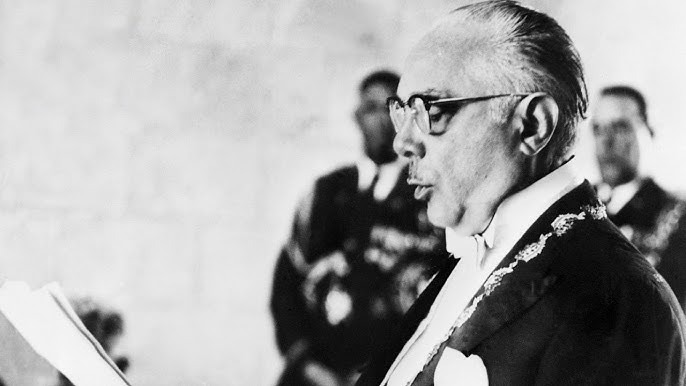

El ajusticiamiento de Trujillo
Durante más de treinta años, Rafael Leónidas Trujillo ejerció un enorme control político, militar y económico sobre la República Dominicana.
La noche del 30 de mayo de 1961, un grupo de dominicanos organizó una emboscada contra Trujillo mientras este viajaba por la carretera que comunicaba Santo Domingo con San Cristóbal.
El vehículo en el que viajaba fue interceptado y se produjo un enfrentamiento armado en el que Trujillo resultó muerto.
Su muerte marcó el final de la figura central de la dictadura, aunque gran parte de la estructura política y militar construida durante el régimen todavía permanecía activa.
